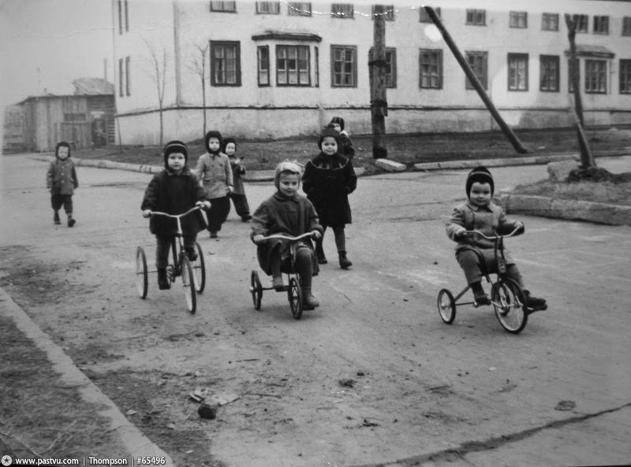

Чем заполнить время, освободившееся от экрана
Любой разговор про сокращение экрана упирается в вопрос «а чем тогда заняться?». Если экран отобрали, а взамен ничего не дали, ребенок не идет счастливо читать. Он злится, и через час экран возвращается с двойной силой. Поэтому четвертая норма Хайдта - не про запреты, а про возврат свободной игры и независимости.

«Сегодня мы охотники» на три цвета во дворе; лупа для рассматривания трещин, листьев и песка; бумажные кораблики после дождя.
Велосипед как новый день, «бинго района» 5 на 5 клеток, дворовый волейбол через скакалку вместо сетки.
Карта собственного района, велопоход на день с маршрутом и бутербродами, скейт, ролики или самокат с нормальной защитой.
Одно воскресенье в месяц без телефонов у всех. На завтрак сложили телефоны в коробку, вечером забрали. Внутри может быть лес, дача, гости, выставка или просто длинная прогулка. Главное - взрослые тоже без телефонов.